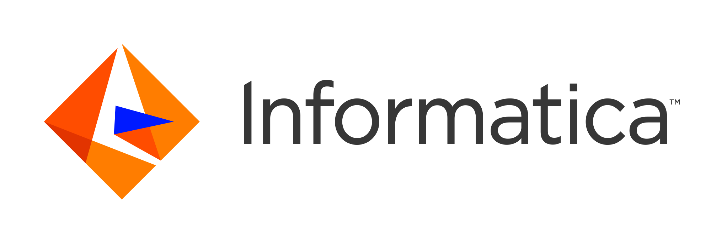

- Generated by
 1.8.11
1.8.11
|
UM .NET API
6.14
|

Ultra Messaging (Version 6.14)
This document provides detailed reference information for the UM .NET API.
For policies and procedures related to Ultra Messaging Technical Support, see UM Support.
(C) Copyright Informatica LLC 2004,2021. All Rights Reserved.
This software and documentation are provided only under a separate license agreement containing restrictions on use and disclosure. No part of this document may be reproduced or transmitted in any form, by any means (electronic, photocopying, recording or otherwise) without prior consent of Informatica LLC.
A current list of Informatica trademarks is available on the web at https://www.informatica.com/trademarks.html.
Portions of this software and/or documentation are subject to copyright held by third parties. Required third party notices are included with the product.
This software is protected by patents as detailed at https://www.informatica.com/legal/patents.html.
The information in this documentation is subject to change without notice. If you find any problems in this documentation, please report them to us in writing at Informatica LLC 2100 Seaport Blvd. Redwood City, CA 94063.
Informatica products are warranted according to the terms and conditions of the agreements under which they are provided.
INFORMATICA LLC PROVIDES THE INFORMATION IN THIS DOCUMENT "AS IS" WITHOUT WARRANTY OF ANY KIND, EXPRESS OR IMPLIED, INCLUDING WITHOUT ANY WARRANTIES OF MERCHANTABILITY, FITNESS FOR A PARTICULAR PURPOSE AND ANY WARRANTY OR CONDITION OF NON-INFRINGEMENT.
To use the UM .NET API, you must access the UM C sharp library. This library accesses the UM native libraries. Note that the UM C sharp and native libraries are platform dependent and are contained in the platform-specific package.
There are a variety of UM features that include the UM library calling back into the application. The most common example of this is the Receiver callback (sometimes named "onReceive").
It is important that the application callback not allow any unhandled exceptions to be thrown back into UM. For example, you might enclose your entire callback code in an enclosing try/catch. The application callback should always return normally into UM.
The "lbmcs.dll" package is a wrapper around the native UM library ("lbm.dll" for Windows).
The Windows "lbmcs.dll" library is specific to Windows. I.e. you are not able to use a single "lbmcs.dll" for both Windows and Linux. Also, there are separate packages for 32-bit vs. 64-bit Windows. We do not currently offer a single "Any CPU" version that is usable in both environments.
The .NET files for UM are located in the Windows package in the "...\bin\dotnet" folder. For example:
C:\Program Files\Informatica\UMS_6.12.1\Win2k-x86_64\bin\dotnet
(Replace "UMS_6.12.1" with your UM version.)
To run .NET applications on Windows, the .NET framework needs to be able to find the native UM library, "lbm.dll". A typical way to accomplish this is to include the "bin" folder in the system PATH.
As of UM version 6.12.1, the Ultra Messaging .NET API can be used on the Linux 64-bit platform. Note that, as is the case with the Windows .NET API, the "lbmcs.dll" package is a wrapper around the native UM library ("liblbm.so" for Linux).
The Linux "lbmcs.dll" library is specific to Unix. I.e. you are not able to use a single "lbmcs.dll" for both Windows and Linux. However, your .NET applications should work transparently with either. You don't need to compile your applications separately for Windows and Linux.
The .NET package files for UM are located in the Linux package in the ".../bin/dotnet" directory. For example:
/um_home/UMS_6.12.1/Linux-glibc-2.17-x86_64/bin/dotnet
(Replace "/um_home/UMS_6.12.1/Linux-glibc-2.17-x86_64" with the path where your version of UM is installed.) In there you will find the .NET DLL files for the API packages, and the compiled executables for the example applications.
To run .NET applications on Linux, the .NET framework needs to be able to find the native UM dynamic library, "liblbm.so". A typical way to accomplish this is to set the environment variable "LD_LIBRARY_PATH" to point at the UM library directory. For example:
LD_LIBRARY_PATH=/um_home/UMS_6.12.1/Linux-glibc-2.17-x86_64/lib export LD_LIBRARY_PATH
(Replace "/um_home/UMS_6.12.1/Linux-glibc-2.17-x86_64" with the path where your version of UM is installed.) In there you will find the UM native libraries.
Making the Transition to Linux
It is beyond the scope of UM documentation to give general instruction on how to transition from a Windows .NET development and runtime environment to Linux. However, we are happy to provide some links to useful documentation:
1.8.11